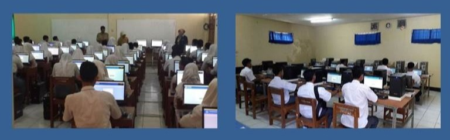

<!DOCTYPE html>
<html  >
<head>
  <!-- Site made with Mobirise Website Builder v5.5.5, https://mobirise.com -->
  <meta charset="UTF-8">
  <meta http-equiv="X-UA-Compatible" content="IE=edge">
  <meta name="generator" content="Mobirise v5.5.5, mobirise.com">
  <meta name="viewport" content="width=device-width, initial-scale=1, minimum-scale=1">
  <link rel="shortcut icon" href="assets/images/logo-tut-wuri-handayani-removebg-preview.png" type="image/x-icon">
  <meta name="description" content="">
  
  
  <title>ARTIKEL</title>
  <link rel="stylesheet" href="assets/web/assets/mobirise-icons2/mobirise2.css">
  <link rel="stylesheet" href="assets/bootstrap/css/bootstrap.min.css">
  <link rel="stylesheet" href="assets/bootstrap/css/bootstrap-grid.min.css">
  <link rel="stylesheet" href="assets/bootstrap/css/bootstrap-reboot.min.css">
  <link rel="stylesheet" href="assets/dropdown/css/style.css">
  <link rel="stylesheet" href="assets/socicon/css/styles.css">
  <link rel="stylesheet" href="assets/theme/css/style.css">
  <link rel="preload" href="https://fonts.googleapis.com/css?family=Jost:100,200,300,400,500,600,700,800,900,100i,200i,300i,400i,500i,600i,700i,800i,900i&display=swap" as="style" onload="this.onload=null;this.rel='stylesheet'">
  <noscript><link rel="stylesheet" href="https://fonts.googleapis.com/css?family=Jost:100,200,300,400,500,600,700,800,900,100i,200i,300i,400i,500i,600i,700i,800i,900i&display=swap"></noscript>
  <link rel="preload" as="style" href="assets/mobirise/css/mbr-additional.css"><link rel="stylesheet" href="assets/mobirise/css/mbr-additional.css" type="text/css">
  
  
  
  
</head>
<body>
  
  <section data-bs-version="5.1" class="menu menu2 cid-sTq3FZ9SoT" once="menu" id="menu2-11">
    
    <nav class="navbar navbar-dropdown navbar-fixed-top navbar-expand-lg">
        <div class="container-fluid">
            <div class="navbar-brand">
                <span class="navbar-logo">
                    
                        
                    
                </span>
                
            </div>
            <button class="navbar-toggler" type="button" data-toggle="collapse" data-bs-toggle="collapse" data-target="#navbarSupportedContent" data-bs-target="#navbarSupportedContent" aria-controls="navbarNavAltMarkup" aria-expanded="false" aria-label="Toggle navigation">
                <div class="hamburger">
                    <span></span>
                    <span></span>
                    <span></span>
                    <span></span>
                </div>
            </button>
            <div class="collapse navbar-collapse" id="navbarSupportedContent">
                <ul class="navbar-nav nav-dropdown nav-right" data-app-modern-menu="true"><li class="nav-item"><a class="nav-link link text-black text-primary display-4" href="index.html">HOME</a></li><li class="nav-item dropdown"><a class="nav-link link text-black text-primary dropdown-toggle display-4" href="page2.html" data-toggle="dropdown-submenu" data-bs-toggle="dropdown" data-bs-auto-close="outside" aria-expanded="false">PROFILE</a><div class="dropdown-menu" aria-labelledby="dropdown-undefined"><a class="text-black text-primary dropdown-item display-4" href="PROFILE.html">Profil Sekolah</a></div></li><li class="nav-item dropdown"><a class="nav-link link text-black dropdown-toggle display-4" href="https://mobiri.se" data-toggle="dropdown-submenu" data-bs-toggle="dropdown" data-bs-auto-close="outside" aria-expanded="false">INFORMASI</a><div class="dropdown-menu" aria-labelledby="dropdown-undefined"><a class="text-black dropdown-item text-primary display-4" href="page3.html">Prestasi</a></div></li><li class="nav-item dropdown"><a class="nav-link link text-black dropdown-toggle display-4" href="https://mobiri.se" data-toggle="dropdown-submenu" data-bs-toggle="dropdown" data-bs-auto-close="outside" aria-expanded="false">KEGIATAN</a><div class="dropdown-menu" aria-labelledby="dropdown-undefined"><a class="text-black dropdown-item text-primary display-4" href="Extrakulikuer.html">Extra Kulikuler</a></div></li>
                    <li class="nav-item"><a class="nav-link link text-black text-primary display-4" href="page4.html">ARTIKEL</a></li>
                    <li class="nav-item"><a class="nav-link link text-black text-primary display-4" href="page5.html"><span class="mobi-mbri mobi-mbri-home mbr-iconfont mbr-iconfont-btn"></span>KONTAK</a>
                    </li></ul>
                
                
            </div>
        </div>
    </nav>
</section>

<section data-bs-version="5.1" class="image3 cid-sUQF33mIjC" id="image3-1r">
    

    <div class="mbr-overlay" style="opacity: 0.7; background-color: rgb(0, 74, 156);">
    </div>

    <div class="container">
        <div class="row justify-content-center">
            <div class="col-12 col-lg-10">
                <div class="image-wrapper">
                    
                    <p class="mbr-description mbr-fonts-style mt-2 align-center display-4">Mengacu pada Permendikbud No.43 tahun 2019 yang difokuskan dengan adanya rencana pengahapusan ujian nasional mulai tahun 2021.Menteri Pendidikan dan kebudayaan Nadien Makarim mengeluarkan kebijakan barunya berupa penghapusan UN dan merubahnya menjadi AKM (Assessmen Kompetisi Minimum). AKM adalah sebuah sistem evaluasi yang lebih fokus untuk mengukur kompetensi siswa dalam segi membaca (literasi), numerik (matematika) serta karakter.Penilaian yang diambil dalam asesmen mengacu pada standar international, seperti PISA (Progamme for International Student Assesment) dan Trends in International Mathematics and Science Study (TIMSS). Menurut survei PISA pada tahun 2018 pendidikan di Indonesia mengalami penurunan pada semua bidang jika dibandingkan dengan tahun 2015. Dibuktikan dengan rendahnya minat membaca (literasi) dan numerik (matematika). Dengan adanya AKM menjadi harapan baru bagi pemerintah dalam memperbaiki pendidikan di Indonesia. Apa tanggapan masyarakat? Dalam sesi wawancara yang digelar oleh tim jurnalistik SMK N Jawa Tengah dengan salah seorang guru (Laely Rohmatin A. S.pd.M.Pd.) setelah mengikuti simulasi AKM,beliau menuturkan, “Memang untuk sekadar membaca semua siswa bisa melakukannya namun untuk mengerti atau memahami isi dari suatu teks masih tergolong sangat awam apa yang dimaksud oleh penulis kadang belum tersampaikan kepada siswa.”(19/20)&nbsp;<br></p>
                </div>
            </div>
        </div>
    </div>
</section><section style="background-color: #fff; font-family: -apple-system, BlinkMacSystemFont, 'Segoe UI', 'Roboto', 'Helvetica Neue', Arial, sans-serif; color:#aaa; font-size:12px; padding: 0; align-items: center; display: flex;"><a href="https://mobirise.site/y" style="flex: 1 1; height: 3rem; padding-left: 1rem;"></a><p style="flex: 0 0 auto; margin:0; padding-right:1rem;"><a href="https://mobirise.site/r" style="color:#aaa;">This web page</a> was started with Mobirise theme</p></section><script src="assets/bootstrap/js/bootstrap.bundle.min.js"></script>  <script src="assets/smoothscroll/smooth-scroll.js"></script>  <script src="assets/ytplayer/index.js"></script>  <script src="assets/dropdown/js/navbar-dropdown.js"></script>  <script src="assets/theme/js/script.js"></script>  
  
  
</body>
</html>